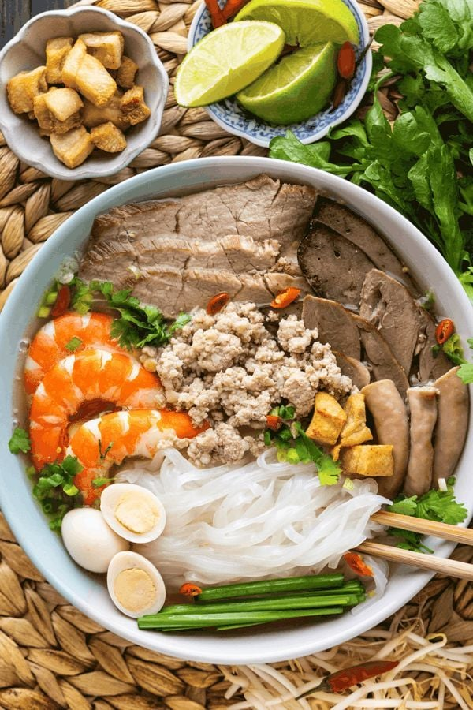
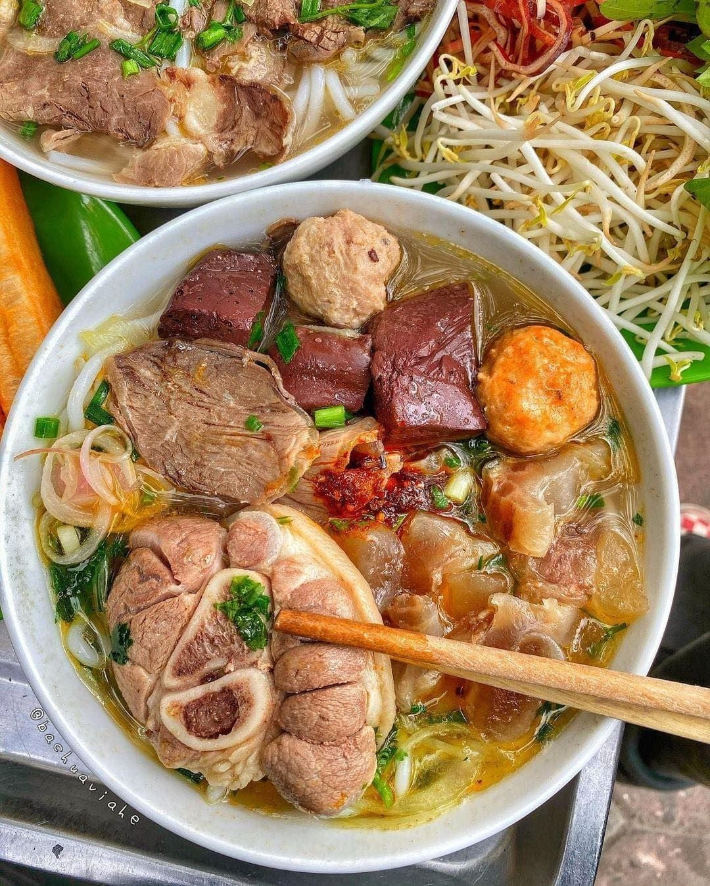
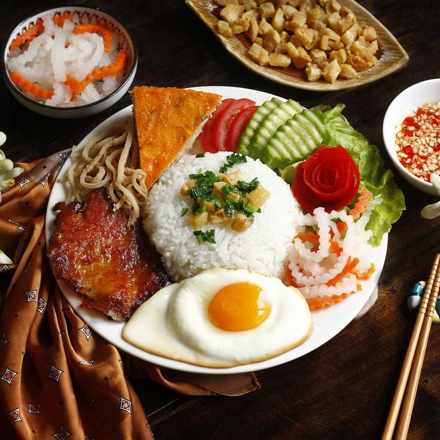

Hương vị ba miền - Tinh hoa dân tộc
Ẩm thực Việt Nam phản ánh đời sống, tập quán và điều kiện tự nhiên của từng vùng miền. Trải dài từ Bắc vào Nam, mỗi miền mang một hương vị riêng, tạo nên sự phong phú và đặc sắc cho nền ẩm thực nước ta.
Ẩm thực miền Bắc có vị thanh đạm, không quá cay hay ngọt, chú trọng giữ hương vị tự nhiên của nguyên liệu.
Các món ăn thường tinh tế, giản dị, thể hiện nếp sống truyền thống.
Tiêu biểu: Phở, bún chả, nem rán.
Đặc trưng: Ăn uống nền nếp, mâm cơm gia đình là trung tâm


Ẩm thực miền Trung nổi bật với vị đậm đà, cay và mặn. Do điều kiện thiên nhiên khắc nghiệt, món ăn thường được chế biến kỹ, nhiều gia vị.
Đặc biệt, Huế có nền ẩm thực cung đình cầu kỳ và đẹp mắt
Tiêu biểu: Bún bò Huế, mì Quảng.
Đặc trưng: Khẩu phần nhỏ, nhiều món, chú trọng hình thức
Ẩm thực miền Nam mang vị ngọt và béo, nguyên liệu phong phú nhờ hệ thống sông ngòi và khí hậu thuận lợi.
Phong cách ăn uống phóng khoáng, gần gũi và đa dạng.
Tiêu biểu: Hủ tiếu, bánh xèo.
Đặc trưng: Ẩm thực đường phố và chợ nổi phát triển mạnh
